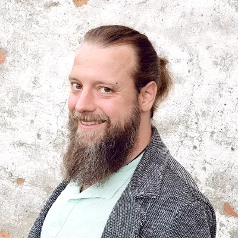
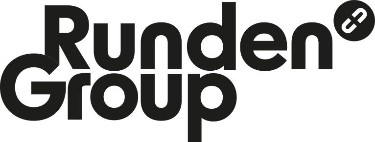

Websites mit Richtung
Struktur, Inhalte und eine technische Basis, die Menschen und Suchsysteme verstehen.
ab 2.400 EUR als FestpreisProjekt besprechen →Webentwicklung · Shops · Betreuung · seit 1999
Seit 1999 baue ich digitale Auftritte, WooCommerce-Shops und individuelle Werkzeuge. 100 Prozent remote aus Plau am See, mit klarer Verantwortung vom ersten Gespräch bis zum Betrieb.
Festpreiseoffene Standardssaubere Übergabe

Individuelles Projekt, Website-Abo oder Betreuung einer bestehenden Seite.
Technik, Gestaltung und die Entscheidungen dazwischen.
Struktur, Inhalte und eine technische Basis, die Menschen und Suchsysteme verstehen.
ab 2.400 EUR als FestpreisProjekt besprechen →WooCommerce, Produktlogik, Preisgruppen und eigene Funktionen, wenn Standard nicht reicht.
ab 4.800 EUR · B2B ab 7.500 EURShop anfragen →Technische und inhaltliche Verbesserungen für Auffindbarkeit, Barrierearmut und klare Wege.
GEO-Update ab 800 EURKurzcheck anfragen →Updates, Sicherheit und Weiterentwicklung mit einer Person, die das System kennt.
ab 40 EUR / MonatBetreuungswege ansehen →Reale Arbeiten aus Shop, Industrie, Sozialbereich und Vereinsarbeit.

Neubau des Shops mit Filtern nach Farbe, Format und Verwendung, Steinmuster-Bestellung, B2B-Preisgruppen und Germanized. Seit 2023 live und in laufender Betreuung.
gerwing.de ansehen →360-Grad-Produktansichten, Salesforce-Web-to-Lead, Job-API und geschütztes Sales Center.
Projekt ansehen →
Elf Websites in Deutsch und Englisch, Karriereportal, Podcast und internes Onboarding in vier Sprachen.
Projekt ansehen →Digitaler Wirkungsbericht mit interaktiver Deutschlandkarte statt statischem PDF. Pro Bono entwickelt.
Wirkungsbericht ansehen →Lokaler Tierschutz-Auftritt mit Spendensystem und Vermittlungs-Listings.
Website ansehen →Weitere Arbeiten: ai-coustics und viele kleinere Auftritte für Unternehmen, Vereine und Initiativen.
Kein wechselndes Team, keine Blackbox und keine Übergabe kurz vor dem Launch.
Sie sprechen mit der Person, die plant, baut, erklärt und Verantwortung übernimmt. Das hält Entscheidungen kurz und die Technik nachvollziehbar.
Ich arbeite standardnah mit WordPress, YOOtheme, WooCommerce und statischem HTML. Wenn eine individuelle Funktion nötig ist, wird sie passend zum Projekt gebaut und dokumentiert.
Erste Webprojekte und der Einstieg in Multimedia Design.
Selbstständig, mit Front-end-, Agentur- und QA-Erfahrung aus der Games-Branche.
Websites, Shops, Tools und laufende Betreuung für Unternehmen und Organisationen.
Kostenloses Erstgespräch bis zu einer Stunde, klare Angebote und saubere Übergabe.
Vom schlanken Einstieg bis zur individuellen Plattform.
Aufbau, Hosting und definierte Pflege für eine fokussierte Website. Der genaue Umfang steht im Angebot.
Abo ansehen →Eigene Struktur, Inhalte und Technik. Shops starten ab 4.800 EUR, B2B-Shops ab 7.500 EUR.
Angebot anfragen →Basis, Website-Pflege oder Entwicklung für bestehende Auftritte. Zusätzliche Arbeit wird mit 80 EUR / Stunde kalkuliert.
Betreuung besprechen →Transparent statt vermischt: Das Website-Abo ist ein eigenes Modell. Die Betreuungspreise gelten für bereits vorhandene Websites und ersetzen kein neues Projekt.
Offen beantwortet, bevor Sie sich entscheiden.
Ja. Die Zusammenarbeit läuft digital und persönlich. Jan-Erik sitzt in Plau am See und ist in der Regel innerhalb von zwei Wochen verfügbar.
KI hilft bei Recherche, Varianten und Routine. Struktur, technische Verantwortung, Datenschutz und die Entscheidung, was für Ihr Angebot stimmt, bleiben menschliche Arbeit.
Das Abo bündelt Aufbau, Hosting und Pflege einer neuen Website. Betreuung startet bei einer vorhandenen Seite und umfasst je nach Paket technische Pflege oder Weiterentwicklung.
Ja. Domain, Inhalte und Zugänge werden geprüft und der Umzug wird vorab abgestimmt. Eine saubere Übergabe bleibt jederzeit möglich.
Eine kurze Nachricht mit Branche, Ziel und vorhandener Domain reicht. Sie bekommen eine ehrliche Richtung und den nächsten sinnvollen Schritt.